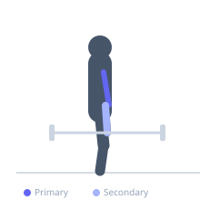

Exercise guide / EZ-Bar Curl
EZ-Bar Curl
The EZ-bar curl is a barbell curl variation using the angled cambered EZ-curl bar, which places the wrists in a semi-supinated position that reduces ulnar deviation stress compared to a straight bar. This grip positioning strongly activates the brachialis alongside the biceps brachii, and is often considered more joint-friendly for lifters who experience wrist or elbow discomfort with straight-bar curls.
Primary muscles
biceps brachii long head
biceps brachii short head
brachialis
Secondary muscles
brachioradialis
Stabilizers
longissimus
Equipment
EZ-Curl Bar


Starting position
- Stand upright holding the EZ-bar using the inner angled grip, wrists in a semi-supinated (angled) position. Arms fully extended, bar at hip level.
Setup
- Load the EZ-curl bar with appropriate weight. Grip the inner angled portion of the bar with both hands for the standard semi-supinated grip. Stand with feet shoulder-width apart.
Steps
- Step 1: Hold the EZ-bar at arm's length with the inner angled grip. Stand tall with the core braced.
- Step 2: Keep the elbows pinned at the sides — they should not travel forward.
- Step 3: Exhale and curl the bar upward in an arc until it reaches approximately shoulder level and the biceps are fully contracted.
- Step 4: Inhale and lower the bar in a controlled arc back to the starting position.
Coaching cues
- Elbows stay at your sides — curl the weight, do not swing it
- Squeeze at the top before lowering slowly
Breathing
- Exhale on the curl up; inhale on the controlled lowering.
Range of motion
- Full extension at the bottom; curl to full bicep contraction at the top.
Tempo
- 2-1-3-0
Common mistakes
- Letting the elbows travel forward significantly as the bar rises, which recruits the anterior deltoid
- Swinging the torso to generate momentum — the movement should be strict
Safety
- If wrist discomfort occurs with the inner grip, try the outer angled grip
- Avoid hyperextending the elbows at the bottom of each rep
Training
- strength: 5–8 reps
- hypertrophy: 8–15 reps
- endurance: 12–20 reps
- strength: 3–5 sets
- hypertrophy: 3–4 sets
- endurance: 2–3 sets
- Rest: {'strength': 120, 'hypertrophy': 75, 'endurance': 45}